Hayatını Planla
Verimlilik
Gününü planla, Buddy büyüsün.
DEHB dostu günlük planlayıcı. Yanında sanal pet Buddy var.
19+özellik tek uygulamada; görevler, alışkanlıklar, su, ilaç, uyku, odak
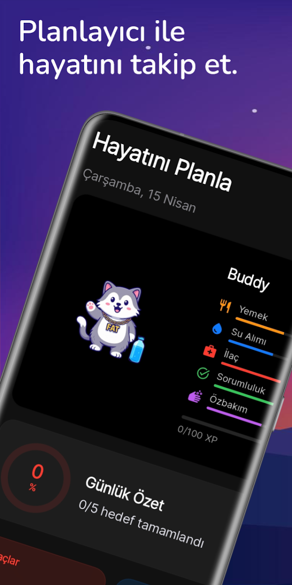
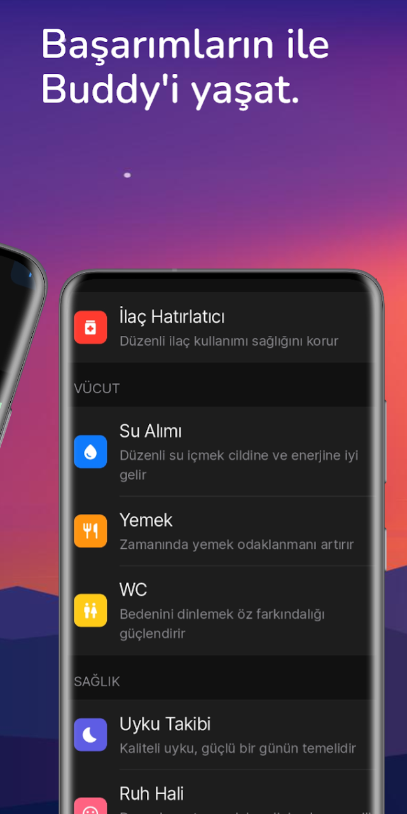
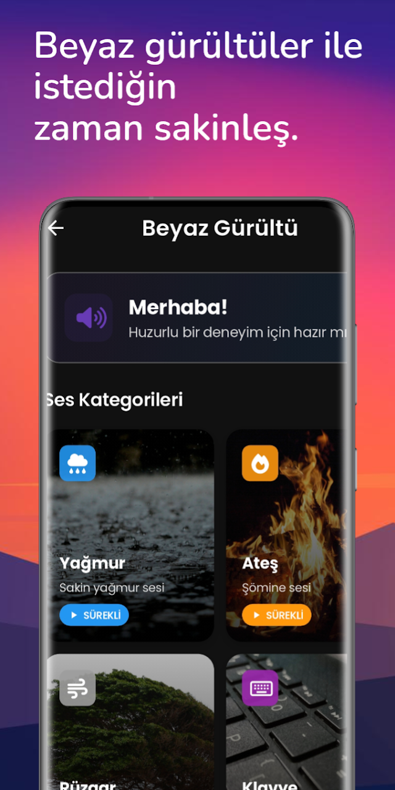
Bağımsız mobil uygulama stüdyosu
CEY Studio'nun beş Android uygulaması gününün farklı anlarına eşlik eder. Sakin, özenli, gizliliğe saygılı.
Her biri gerçek bir günlük ihtiyaçtan doğdu.
Verimlilik
Gününü planla, Buddy büyüsün.
DEHB dostu günlük planlayıcı. Yanında sanal pet Buddy var.



Sağlık ve Fitness
Ritmini bul. Kendine geri dön.
Aralıklı oruç zamanlayıcısı; su, kilo ve ilerleme takibi.
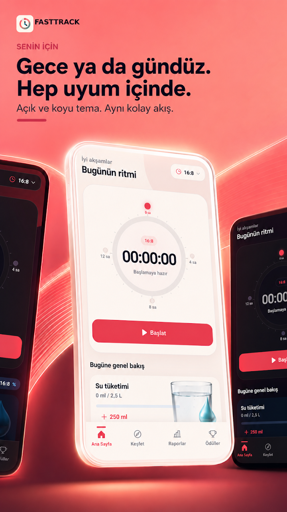
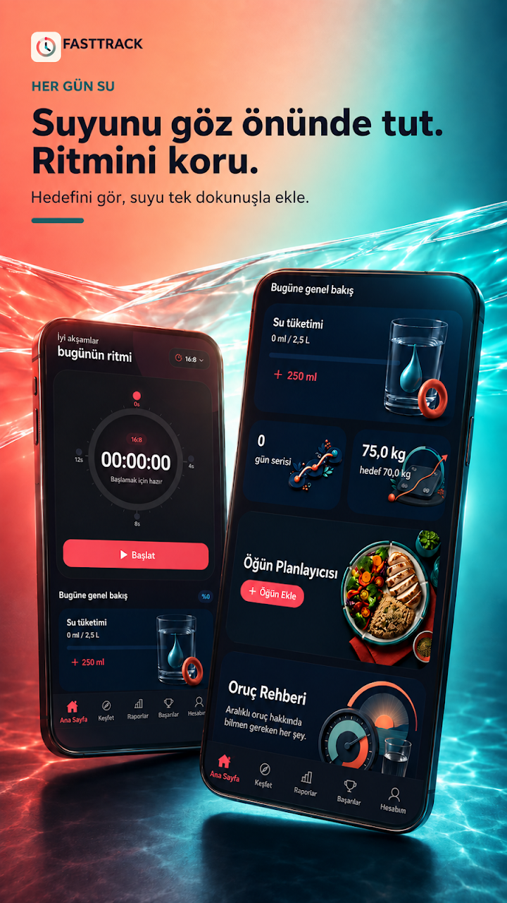
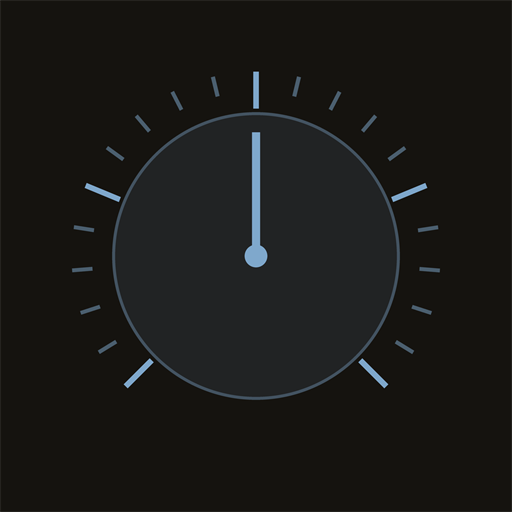
Müzik ve Ses
Dünyanın sesini kıs.
Uyku, odak ve rahatlama için tamamen çevrimdışı sesler.

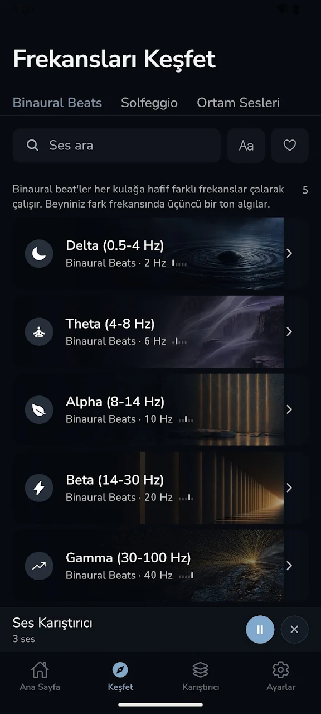

Kitaplar ve Referans
Her gün birkaç dakika, sana ait.
Günlük İncil ayetleri, rehberli dualar, okuma planları ve iman günlüğü.
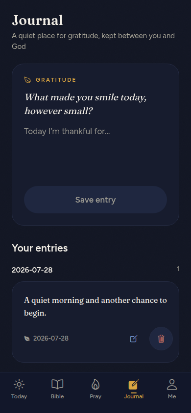
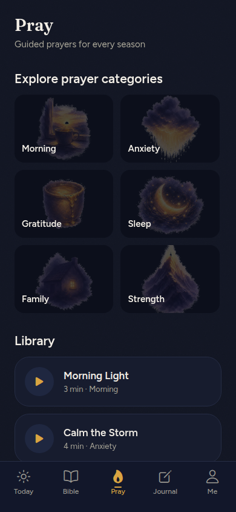
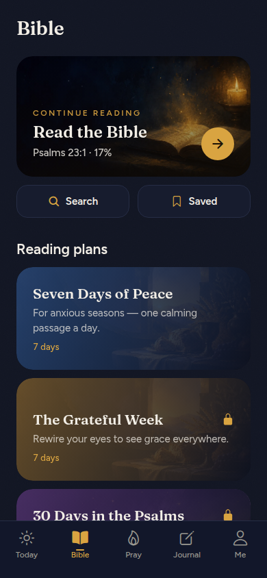
Sağlık ve Fitness
Döngünü tanı, kendine sahip çık.
Adet döngünü kolayca takip et, bedenini daha iyi tanı.
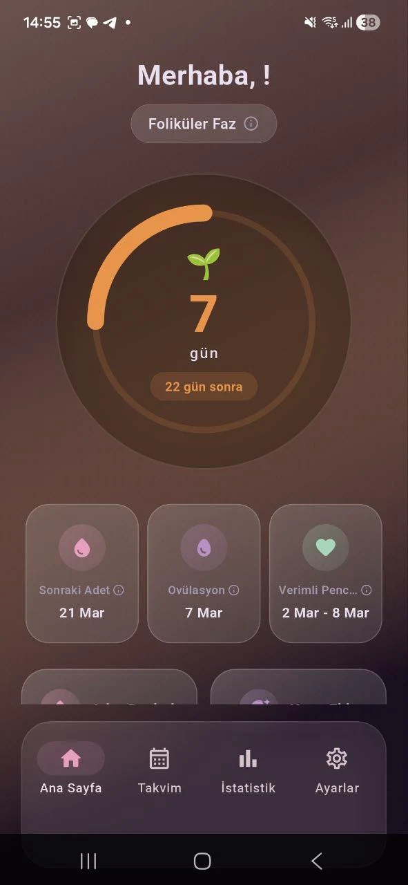
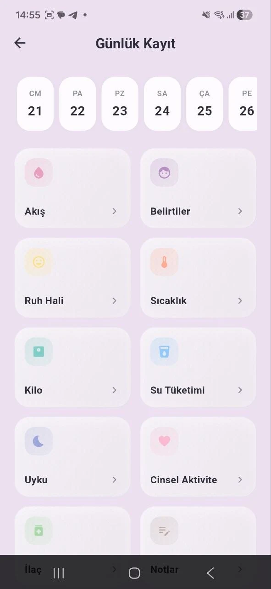
Yaklaşım
Kayıtlar mümkün olduğunca cihazında kalır. Döngü Takip PIN ve biyometrik kilit sunar; FastTrack yemek fotoğraflarını sunucuda saklamaz.
Her uygulamanın kendi karakteri var. Çıkış noktası hep aynı: her gün gerçekten açmak isteyeceğin bir deneyim.
Yolda
Henüz mağazada değiller. Hazır olduklarında Google Play sayfamızda yayınlanacaklar.
Kur'an okuma, namaz vakitleri, kıble, dua ve zikir alışkanlıklarını bir araya getiren manevi yol arkadaşı.
Dua ve maneviyatGeliştirmedeTürkçe yönlendirmeli meditasyonlarla gün içinde kendine ayırdığın zamana eşlik eder.
MeditasyonGeliştirmedeKahve falı, tarot, rüya ve doğum haritası deneyimlerini bir araya getiren keşif uygulaması. Eğlence amaçlıdır.
EğlenceGeliştirmedeKarakterlerle kendi cümlelerinle konuştuğun, seçimlerinin sonraki sahneleri değiştirdiği romantik hikâyeler.
İnteraktif hikâyeGeri bildirimler uygulamalarımızı şekillendiriyor. Yaz, okuyalım.
dehbkoclugu@gmail.com